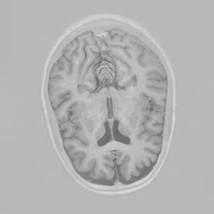

Automatic Segmentation of Brain Structures using Multi-Dimensional Recurrent Neural Networks
Simon Andermatt
Medical Image Analysis Center (MIAC)
### Contents
* Problem statement
* RNN/GRU run-through
* MD-GRU
* Results on MrBrains13
Goal


->

blabla
### Goal


?
### RNN/GRU

* http://colah.github.io/posts/2015-08-Understanding-LSTMs/
### $L_0$ Gradient Minimization
* $F = \min\limits_S || S - I ||^2 + \lambda ||\nabla S||_0$
* $F = \min\limits\_S \sum\limits\_\{i=1\}^M \bigg( ||S\_i-I\_i||^2+\lambda/2\sum\limits\_\{j\in N\_i\} ||S\_i-S\_j||\_0 \bigg) $
* With $N_i$ being the neighbors of element $i$
* NP-hard problem (very high computational complexity)
* Solvable through approximation
### Region Fusion
#### Fusion Criterion
* if $||I_i-I_j||^2/2 \leq \lambda$
* fuse labels
$S_i = (I_i+I_j)/2$
$S_j = (I_i+I_j)/2$
* else
* do nothing.
### Region Fusion
#### For regions larger than $1$:
$ f = \min\limits\_{S\_i,S\_j} \omega\_i||S\_i-Y\_i||^2 + \omega\_j||S\_j-Y\_j||^2+ \lambda c\_{i,j}||S\_i-S\_j||\_0 $
$\omega_i, \omega_j$: number of elements in regions $i$ and $j$
$c_{i,j}$: size of border between regions $i$ and $j$
$Y_i$: mean intensity of region $i$.
#### And the fusion criteria:
* If $ \omega\_i \omega\_j ||Y\_i-Y\_j||^2 \leq \beta c\_{i,j} (\omega\_i + \omega\_j) $:
* $S\_i = S\_j = (\omega\_i Y\_i+\omega\_j Y\_j)/(\omega\_i + \omega\_j)$
* else:
* $ S\_i = Y\_i, S\_j = Y\_j$
#### Approach:
* For each pixel: a region $G_i$, #elements $\omega_i$, intensity $Y_i$
* Neighborhood $N\_i$ of $i$ and $c\_{i,j}$ = 1 for each $j \in N\_i$
* while($\beta \leq \lambda$)
* While $i \leq $ number of groups:
* For all $j \in N_i$:
* if fusion criterion:
* merge $G_j$ with $G_i$; update $\omega_i$ and $Y_i$
* remove $j$ in $N\_i$ and set $c\_{i,j}$ to 0
* merge all $k$ in $N_j$ with $N_i$ and erase $j$ in $N_k$
* remove $G_j$ , i++
* iter++
* $\beta$ = g(iter,maxNumIter)$\lambda$
#### $\beta$
* linear: $g(iter,K) = (iter/K)$
* nonlinear: $g(iter,K) = (iter/K)^\gamma$
* multiplicative: $g(iter,K) = \alpha^{(iter-K)}$
.
#### Fusion criterion:
* $ \omega\_i \omega\_j ||Y\_i-Y\_j||^2 \leq \beta c\_{i,j} (\omega\_i + \omega\_j) $
### Experiments
* Compare their method to Xu et al, Cheng et al, and Storath et al.
* Their method outperforms the others in terms of speed
* Xu et al performs worse.
* Storath and Cheng about the same cost, but slower.
### Applications
* Image denoising
* Faster, but Storath et al. better
* Content-based color quantization
* Clip art compression artifact removal
* Faster, but comparable results to others.
* Mesh denoising
* use normals, then reconstruct vertices.
* claim to be better and faster.


 ->
->